Top Albums of 2012 (Bubbling Under)
Was 2012 a good year for new music? Of course it was. Each year brings its share of special albums, and this one was no different. Was it a great year? A truly vintage year? It’s almost certainly too early to comment. I suspect that a handful of the records celebrated in our end of year list will come to be regarded as classics, with some genres better represented in this regard than others. It wasn’t exactly a banner year for indie-rock, for example, but there was still plenty to cheer about, as you’ll discover over the coming days.
We first started publishing end of year lists way back in 2002 and you can still read our inaugural list here. It's intriguing to see how our collective taste has diversified over the last decade – you can rest assured that this year’s top 50 is far more representative of what’s going on in music at the moment than its 2002 equivalent. It’s perhaps telling that just one artist features on both of these lists. See if you can guess who...
Putting nostalgia to one side, the actual top fifty will be posted in two parts on Tuesday and Wednesday. To whet your appetite, here are twenty records that very nearly made the cut but ultimately fell short.
. . .
 Andy Stott
Andy Stott
“Luxury Problems”
(Modern Love)
Andy Stott’s first release to include live vocals (from his piano teacher of all people), Luxury Problems takes the signature murk found on his earlier albums, only this time offers a clear path through. As the title suggests, juxtaposition is the most prominent feature of the release, contrasting the tranquility of a composed female’s vocals with Stott’s method of distorting and garbling sound. Tracks like Numb and Hatch the Plan recall the mechanical sounds of Basic Channel and even incorporate the ominous sense of bass often present in UK two-step and grime. Luxury Problems is easily Stott’s best release, proving that even boiled-down, gritty techno beats can be dressed up in the presence of a lady. (Michael Smith)
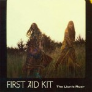First Aid Kit
“The Lion's Roar”
(Wichita)
I can’t explain the circumstances that had me pick up this record on the verge of a drive through New England’s white mountains, but the collision of incidents was kismet. After all, the Soderberg sisters’ call proves downright cavernous in unison, transforming songs like To A Poet and I Found A Way into tales of long-distance yearning. Alternating for sweet-cheeked pop on Blue and Emmylou, First Aid Kit’s second full-length makes good on their Myspace origins by mastering a vein of rural folk equal parts rustic and cosmopolitan. And with warm country hues courtesy of Mike Mogis’ production, it feels natural that Conor Oberst should appear on closing track King Of the World for a sweet send-off; something to remember on the long drive home. (Ryan Pratt)
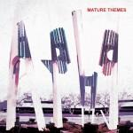Ariel Pink's Haunted Graffiti
“Mature Themes”
(Matador)
There are few bands capable of traversing the terrain of popular music with the grace of Ariel Pink’s Haunted Graffiti. Soft-rock, blue-eyed soul, 80s gothic, synth-pop, new wave – Pink’s imagination knows no bounds, and his band is adept at taking him wherever he needs to go. Indeed, Pink’s greatest strength is probably his ability to suggest a specific genre or particular era without creating a fully blown copy of it. Mature Themes celebrates many of his favourite artists, but it is not an homage to anyone or anything. That is its great achievement. (David Coleman)
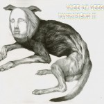Thee Oh Sees
“Putrifiers II”
(In The Red)
We’ve come to expect San Francisco radicals Thee Oh Sees to grace us with a new album every few months, so it’s no surprise that even a career-defining achievement like Putrifiers II would expectedly go overlooked. Truth of the matter is that garage is still as niche as it gets. And one could accuse fellow hometown compatriot Ty Segall for stealing their thunder, but even his surprising popularity wouldn’t have made much of a difference. Both acts had different sounds to prove in 2012 – while Segall blasted every guitar-mauling riff with force, John Dwyer and company separated themselves from their ingenuous selves to some extent to lurch into the seedier side of psychedelia. Putrifiers II stretches their sonic palate to a more sophisticated degree, yet it still has its eyes set on that classic, pop-minded fuzz they’ve been curating for years. (Juan Edgardo Rodriguez)
Miguel
“Kaleidoscope Dream”
(RCA)
We’ve been graced with the presence of a variety of new, obscure genres in our information age, but listening to Kaleidoscope Dream makes you appreciate the unswerving resolve in a classic R&B song. Miguel has revived sexy, which is incredibly hard to do without sounding tawdry or cheesy. While the world fell in love with Adorn, I personally swooned over Use Me and The Thrill. Miguel reminds us of our relationship with music and how it has the ability to completely manipulate our emotions. It’s the make-out album of 2012. (Randi Dietiker)
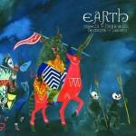Earth
“Angels Of Darkness, Demons Of Light II”
(Southern Lord)
The second installment of Earth’s Angels Of Darkness, Demons Of Light series follows its predecessor with much of the same story while revealing some new depth. Still musically wandering some anonymous stretch of dusty tundra, Dylan Carlson varies his stride a bit, the opening Sigil Of Brass a contemplative pluck of strings transitioning into the more confident and subtle gallop of His Teeth Did Shine Brightly. While the first album demonstrated a need to advance, this album seems to find some shelter, the bar band air of The Rakehell suggesting that there’s always been somewhere in mind. Earth’s Angels Of Darkness, Demons Of Light is an affecting series seemingly bred from stone, sand, blue skies and a horizon line that won’t sit still. (Sean Caldwell)
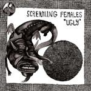Screaming Females
“Ugly”
(Don Giovanni)
With Ugly, Marissa Paternoster proves herself one of the most formidable guitarists in rock and roll. Nearly every song on the album is littered with fiery licks, but she also introduces a vast array of different techniques that give every song a unique sound while maintaining more anger and energy than most bands will put out all decade. In a time when experimentation and originality are, for better or worse, becoming increasingly synonymous with quality songwriting, Screaming Females remind us that sometimes all you need are furious hooks and an unforgettable yell. Punk has rarely sounded so fresh. Even guitar has rarely sounded so fresh. (Forrest Cardamenis)
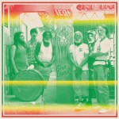Sun Araw & M Geddes Gengras meet The Congos
“Icon Give Thank”
(Rvng Intl.)
Space cadets Cameron Stallones (aka Sun Araw) and M Geddes Gengras took a trip across the Caribbean and ‘discovered’ a veteran reggae vocal group holed up in a Church Parish compound. The resulting collaboration of two disparate musical worlds is at once compelling, disturbing, blissful and beautiful. Through it all – and riding above the US duo’s psychedelic noise antics – are the glorious harmonies of the Congos, and especially the smooth vocals of lead Cedric Myton. This could easily have been a disaster, as the musical languages of the collaborators are profoundly different. It was instead a triumph, proving that music can transcend race, culture, class, and language, to create something that is truly unique. (David Wood)
Jessie Ware
“Devotion”
(PMR)
Former Jewish Chronicle journalist and SBTRKT collaborator Jessie Ware charmed her way onto the Mercury Prize shortlist in 2012 with Devotion, a record which took the downbeat, introspective minimalism of James Blake and The xx, and teamed it with smooth R&B and soul. The result was an album that had the ability to truly get under your skin, until the seemingly pedestrian blossomed into the soundtrack to your everyday life. Devotion wasn’t just torch songs though – the Big Pun-sampling 110% saw to that – and the malleability and quality of the tracks was showcased throughout the year by a number of expertly-curated remixes. In a world filled with noise, it takes a record as strong as Devotion to really stand out. (Joe Rivers)
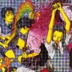Laurel Halo
“Quarantine”
(Hyperdub)
Not only is this a frontrunner for best album art of the year, but Quarantine could be something of a watershed in the way people approach electronic music. Laurel Halo has achieved a sense of alienation in a way no one has really done before. Her vocals are vulnerable, detached, often difficult to listen to, and she sculpts sonic textures around those vocal lines with painstaking detail in every nuance, carving out abstract emotional territories. She has a profound grasp of the juxtaposition between the digital and the bodily in the internet age, and Quarantine is a challenging exploration of this tension. (Stephen Wragg)
Plan B
“iLL Manors
Atlantic
Taking on drugs, murders, immigration (both legal and illegal), race, theology, class and “Broken Britain” is a pretty bold move for your first post-breakthrough album. Most popular acts can’t be arsed to take on these topics, yet Ben Drew confronts them with the venom that imbued protest music, all the way from Dylan, to punk, to Public Enemy and Rage Against the Machine. While everyone else was singing in a faux-folk style about being miserable in love, ill Manors was giving life to a forgotten genre and representing a forgotten/ignored group of people. And it’s got John Cooper Clarke on Pity The Plight. (James McKenna)
Dr. Dog
Be the Void
(Anti)
Always a little off-kilter, Dr. Dog finally nails the balance between weird and accessible (also known as the Wayne Coyne zone) on Be the Void. The album is full of catchy folk-rock hooks with splashes of psychedelia meandering in at just the right places. Mastering the reliably effective technique of wrapping dark lyrics in upbeat melodies, the songs will disarm you with their beautiful choruses before hitting you with the hopelessness of some of the lyrics. An album that's a joy to listen to while being a little heartbreaking, Be the Void is also one of the better works of 2012. (John Grimley)
Lana Del Rey
“Born To Die”
(Polydor)
The Del Rey backlash was tiresome even before the release of Born To Die, and yet it went on, filling up many review word counts with accusations of phoniness or concerned (slash patronising) handwringing over whether she was a good feminist role model or not. Unfortunately, amongst all this, the fact that the album offered a generous helping of stylish, noir-tinged pop got rather lost. A convincing work of role-play on Del Rey’s part, in which she ably demonstrated that there’s more to her than the willing object of desire of Video Games. Even before her Blue Velvet cover made it explicit, there was something positively Lynchian in her invoking a sense of classic Americana gone slightly askew. (Mark Davison)
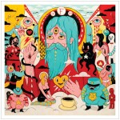Father John Misty
“Fear Fun”
(Sub Pop)
Before Josh Tillman became Father John Misty, he recorded several albums as J. Tillman. For the most part, those records seemed to be an attempt at some of the bland, self-serious songwriting that's endemic in the folk community. However, having split from modern-folk monoliths, Fleet Foxes, it seems Tillman has finally found a way to embrace his natural, smart-ass theatricality. Fear Fun is truly a concoction of Tillman's sharp wit mixed with recollections of folk-predecessors like Harry Nilsson, The Band, and even Neil Young. Ultimately, this makes for a record that continues to sound fresh even after innumerable spins. (Andrew Ciraulo)
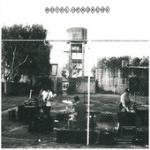Royal Headache
“Royal Headache”
(What’s Your Rupture?)
Royal Headache singer Shogun has often had his voice likened to various R&B singers of the 60s, those charming, clean cut guys that could get any girl they wanted. But seeing him perform live – pacing back and forth like a caged animal amidst a torrent of garage rock mayhem – paints a completely opposite and ultimately more honest portrait. From the paranoid angst of Psychotic Episode to the hopeless romance of Down the Lane, Royal Headache is Ben E. King on his worst day; The Temptations in a sweaty, piss-stained basement club. On the albums final track, Shogun desperately pleas, “Take pity on us.” You’d be willing to give it to him, too, if you weren’t having so much fun. (Peter Quinton)
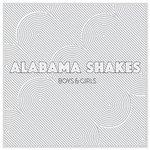Alabama Shakes
“Boys & Girls”
(Rough Trade)
Blasting out of the obscurity of the American south is soul-rock outfit Alabama Shakes, which released its first 4-song, self-titled EP in September 2011, and earned the prefix “Three-time Grammy nominee” barely 2 years later. Frontwoman Brittany Howard possesses an arresting voice and presence but the backing 3 members fill out her sound with solid, swampy licks and rhythms that dazzle and dance. “Bless my heart, and bless yours too,” Howard drawls on the undeniable single “Hold On.” “I don’t know where I’m gonna go, don’t know what I’m gonna do.” Well, anywhere and anything, Ms. Howard, and thank you for the warm wishes. (Ben Jones)
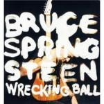Bruce Springsteen
“Wrecking Ball”
(Columbia)
It’s incredible that 40 years into his career, Bruce Springsteen can change so much without changing at all, but that’s exactly what happens on Wrecking Ball. It blends the familiar heartland rock and Celtic influences, always remaining confident even when it needs to be ironic. Like any Bruce album, it’s conceptual without being a full-fledged concept, following the anger of disenfranchised blue-collar workers to a spiritual rebirth. It ends with cautious optimism, one that both recalls fallen heroes of America and calls for active empowerment of today’s people. Wrecking Ball is also the first E Street Band album recorded since the death of Clarence Clemons, and the whole album, despite its politics, plays like a tribute, far from sentimental but always aware of his lasting imprint. (Forrest Cardamenis)
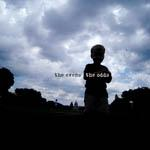The Evens
“The Odds”
(Dischord)
After 2011’s 2 Song 7 inch, The Odds, marks The Evens return to the indie rock arena. Echoing back to Ian MacKaye’s roots with the D.C. punk scene and the bands whose names we proudly pinned to our jackets, The Odds carries a heavy political undercurrent. The album plays like the folky version of what comes after post-punk; the collaboration between MacKaye and Amy Farina has crafted a deeply melodic album that hinges on punk. Providing the fuel for the opening track, King of Kings, is MacKaye’s baritone guitar following a three chord strum that we have all come to love. (Carlos Villareal)
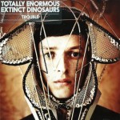Totally Enormous Extinct Dinosaurs
“Trouble”
(Casablanca)
Totally Enormous Extinct Dinosaurs first came to many people's attention when the synthetic bounce of Garden was featured in that ubiquitous Nokia Lumia commercial.Though sometimes at odds with the plaintive vocals, the slick, streamlined electronic textures are the star of this show, dipping into classic house alongside the melancholy synth pop of Metronomy and the quirkiness of Hot Chip. Highlights like Tapes & Money, Trouble and American Dream Part II make this record equally compelling when soundtracking bedsit discos or rib-cage rattling dancefloors. (Gary McGinley)
Liars
“WIXIW”
(Mute)
Though WIXIW will stand as a new musical direction for Liars, its presence of microchip’d sound shouldn’t suggest for the band any real progression. It’s a good album, revelatory in that Liars can carry their sound into different realms of possibility, a translation carried out by different instruments. They maintain their cred and remain on the fringe, but not because they went electric. (Sean Caldwell)
. . .
The first part of our top 50, featuring numbers 50 through 26, will be published on Tuesday. The top 25 will be published on Wednesday.
17 December, 2012 - 09:37 — No Ripcord Staff